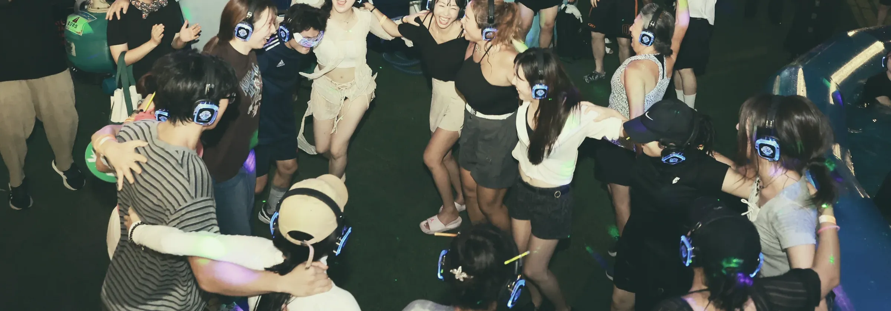
이 장소에 맞아요 300명 이내라면 언제 어디든 · 사례 광화문 서울썸머비치무소음 사일런트 디스코
- 소리
- 헤드셋만 사용, 스피커 출력 없음
- 밖에서
- 낮은 정도의 관객 박수와 환호성
- 추천
- 주거지 인근, 심야, 실내
- 규모
- 헤드셋 300대까지

Team Unsilent · Silent Disco
디제이는 찍지 마세요. 굳이 찍겠다면, 가장 즐거운 ‘나’를 찍으세요.
2026.05.10 · 한강 사일런트 디스코 · DJ 부스 뒤에서
왜 팀 언사일런트인가
시작부터 마무리까지 감정선이 끊기지 않습니다. 놀 줄 몰라도 괜찮습니다. 저희가 뛰게 만듭니다.

한강에서 전 세대 대상으로 발굴된 떼창곡.
솔직히 몇 개인지 헤아리기도 어렵습니다.
흥의 민족, 문제는 어떻게 놀 줄 모르는 것.
현장에서 검증한 콘텐츠로 함께 뛰게 합니다.
아이러니하게도 공연자가 유명하지 않아
더 열광적인 무대가 연출됩니다.
* 관객 900+는 2024년 회차별 집계, 보도 194+는 2023~2024년 한강 사일런트 디스코 관련 보도 집계입니다. 방송사 8곳은 2023~2025년 한강 사일런트 디스코를 소개한 방송사입니다. 아래 '공연 실적 · 언론'의 보도 목록은 별개 집계입니다.
현장 영상
헤드셋 속 음악은 들리지 않지만 관객의 반응은 그대로 보입니다. 옆으로 넘겨 보세요. 더 많은 영상은 각 DJ 프레스킷에서.
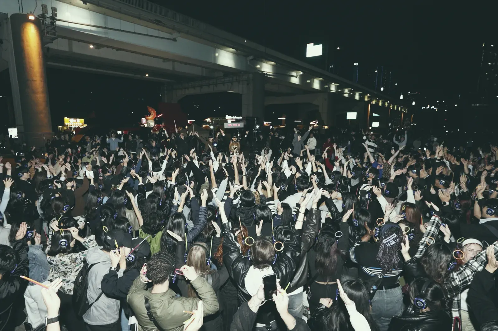
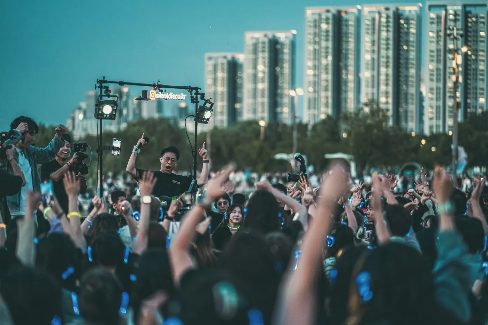
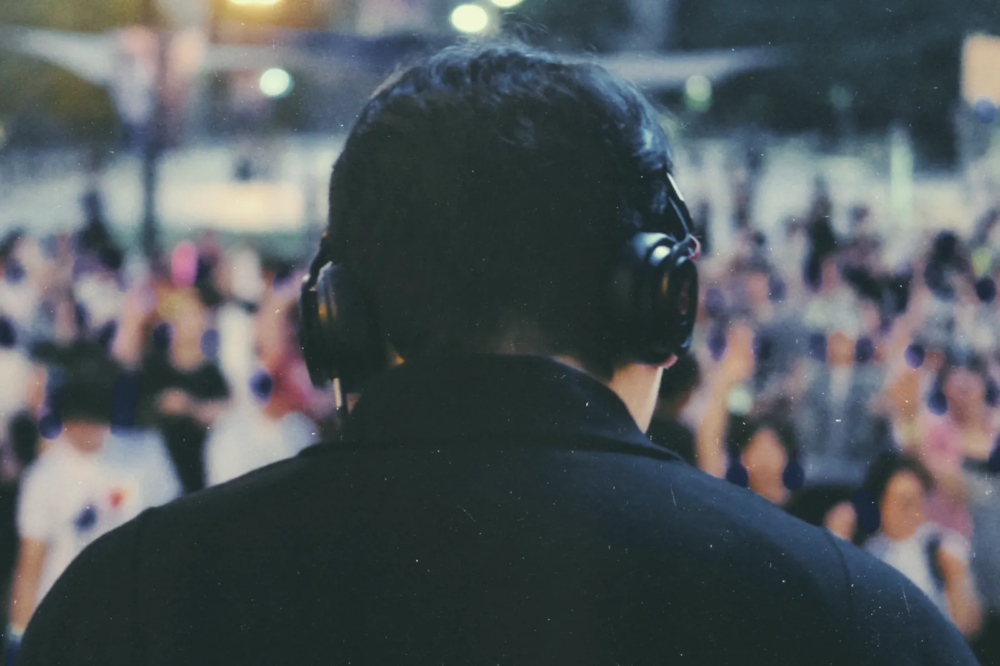
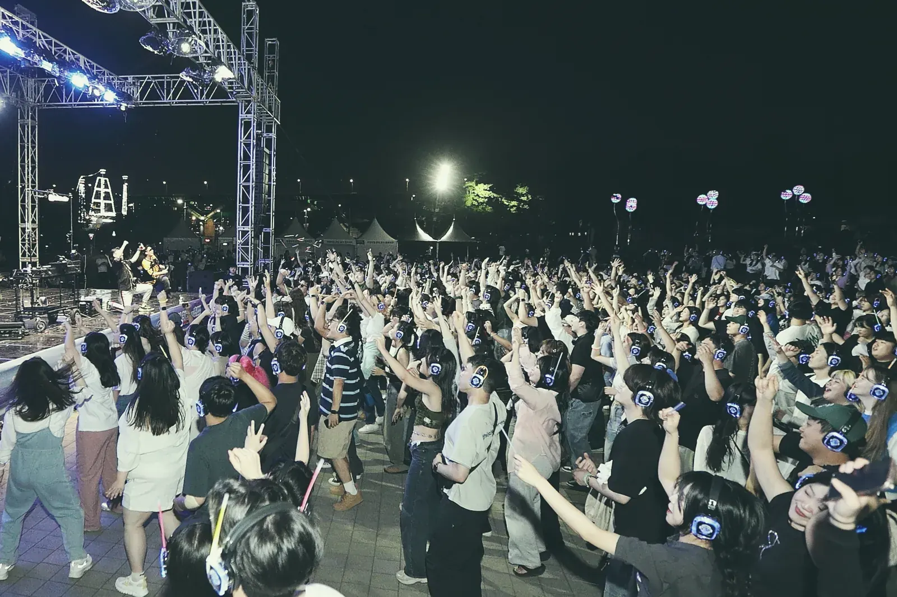


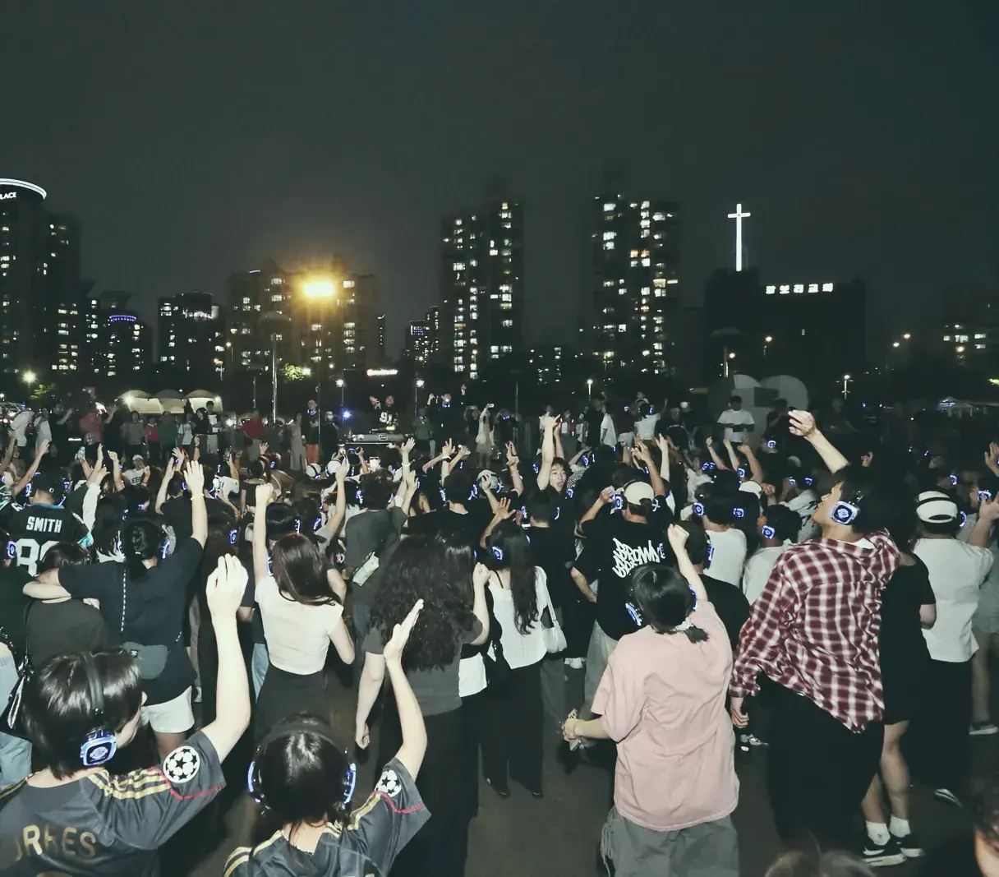
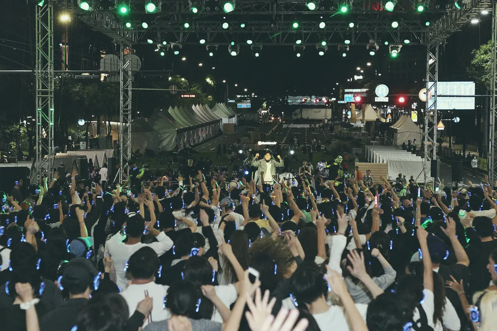

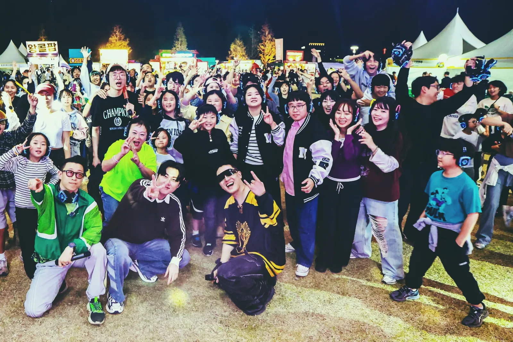
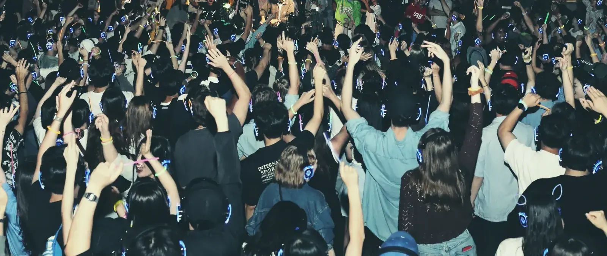


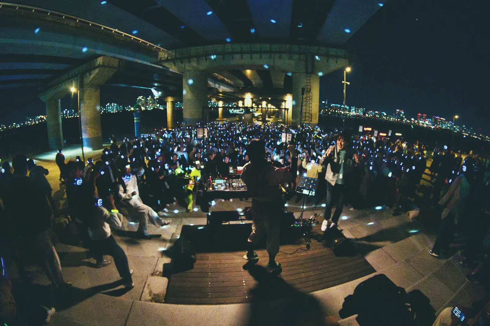
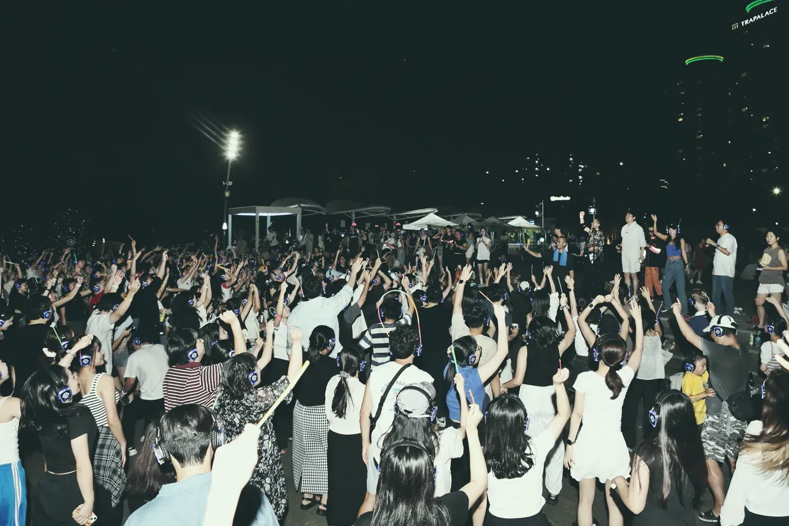
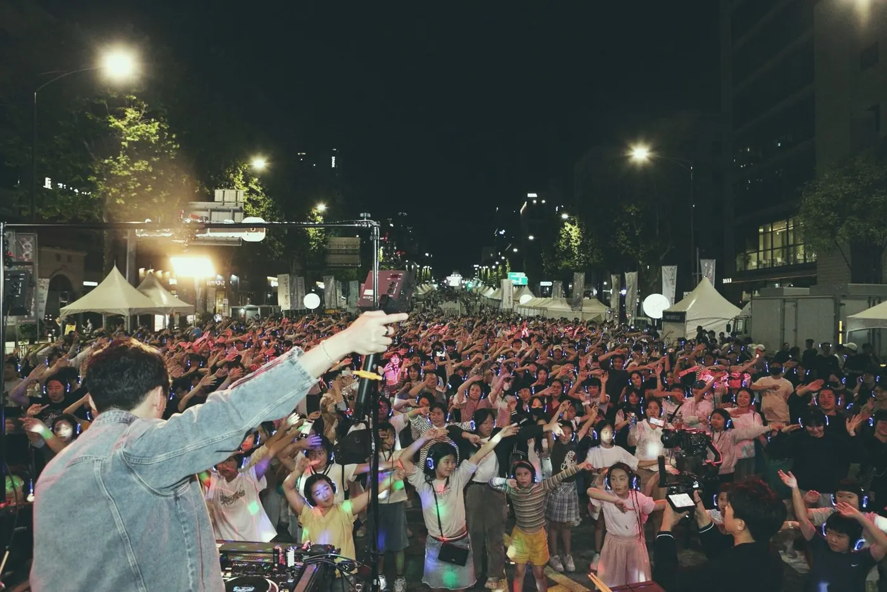

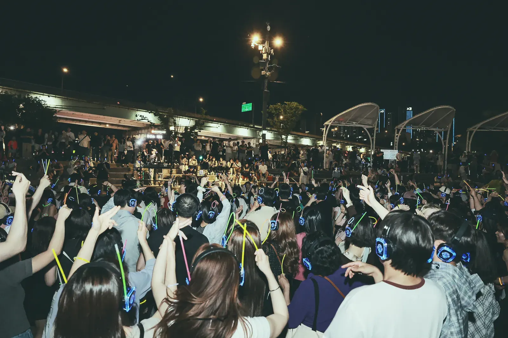
공연 방식
세 방식 모두 공연 시간은 60~120분, 행사 일정에 맞춥니다. 장소를 고르면 맞는 방식을 짚어 드립니다.

이 장소에 맞아요 300명 이내라면 언제 어디든 · 사례 광화문 서울썸머비치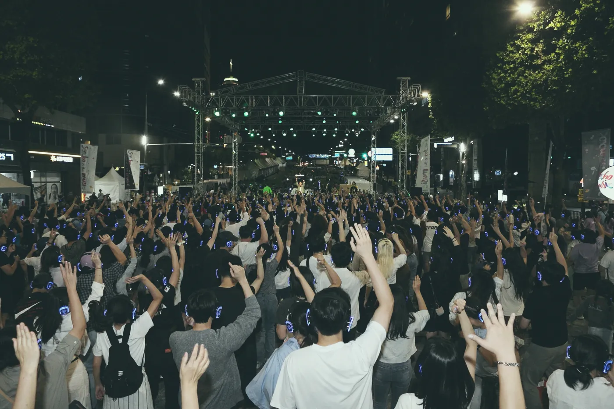
이 장소에 맞아요 길 가던 사람 붙잡는 · 사례 서초구 서리풀 페스티벌 이 장소에 맞아요
소음 걱정 필요 없는 곳에는 · 사례 한강 사일런트 디스코
이 장소에 맞아요
소음 걱정 필요 없는 곳에는 · 사례 한강 사일런트 디스코* 구성별 비용은 섭외 문의 후 소개서로 보내 드립니다. 방식별 자세한 비교는 구성에서.
DJ · 프레스킷
전 세대를 대상으로 한 디제잉 노하우, 그리고 본업의 내공으로 관객이 ‘나’를 남기고 싶은 시간을 만듭니다.

Featuring 01 / 03 · K-POP · 떼창 · EDM · HARDSTYLE
본업 모먼트 · 15년 연구개발사업 기획
“공연도 사전 준비가 8할입니다.”
떼창의 민족 아닙니까. 한강에서 검증된 200곡 이상의 떼창곡으로 나이 불문, 간주까지 함께 부르게 만듭니다.

Featuring 02 / 03 · ALL GENRE · EDM · HARD BASS
본업 모먼트 · 대기업 마케터
“찍고 싶은 순간을 만듭니다.”
클럽과 호텔 라운지, 브랜드 파티와 한강 사일런트 디스코까지. 장르를 가리지 않는 올장르 DJ입니다.

Featuring 03 / 03 · OPEN FORMAT · MELBOURNE BOUNCE
본업 모먼트 · 제약회사 영업
“쭈뼛대는 관객, 제가 설득합니다.”
익숙한 추억의 노래부터 모두가 따라 추는 메가히트곡까지, 어린아이부터 중장년층까지 함께 뛰어놀게 만듭니다.
공연 실적 · 언론
2023년부터 한강 사일런트 디스코의 메인 DJ를 맡고 있습니다. 보도에는 ‘한강 무소음 DJ 파티’라는 행사명으로 나옵니다. 저희가 DJ로 참여한 행사의 보도 78편을 모았습니다.
* 행사 목록은 팀원 공연 이력에서 발췌했습니다. 보도 78편은 팀 언사일런트가 DJ로 참여한 행사(한강 무소음 DJ 파티, 예술의전당 두둠칫 사일런트 디스코 등)를 다룬 보도이며, 팀 단독 보도가 아닙니다. 축제 일정 안내 기사와 팀 참여를 확인하지 못한 회차의 보도는 뺐습니다. 위의 보도 194+(2023~2024 집계)와는 별개 집계입니다. 링크는 2026-10-20 확인.
구성
| MUTE무소음 | LOW저소음 | LOUD언사일런트 | |
|---|---|---|---|
| 헤드셋 대여 | O | O | 선택 (협의) 디제이만 섭외도 가능 |
| 스피커 출력 | 없음 (헤드셋만) | 모니터링 스피커3~5m 들리는 수준 | 주최 측 음향 사용 |
| 밖에서 들리는 소리 | 관객의 박수와 환호 | 관객의 환호·함성 + 모니터링 스피커 | 공연 음악 전체 |
| 맞는 장소 | 주거지 인근, 심야, 실내 | 공원, 광장, 야시장, 캠퍼스 | 무대·음향이 있는 축제 |
| 규모 | 헤드셋 300대까지 | 헤드셋 300대까지 | 헤드셋 병행 진행 가능 |
| 공연 시간 | 60~120분 | 60~120분 | 60~120분 |
* 구성별 비용은 섭외 문의 후 소개서로 보내 드립니다. 스피커 등 부대장비는 포함되지 않습니다.
* 헤드셋 300대 초과도 팀 언사일런트로 문의해 주세요.
테크라이더


진행 · 섭외 문의
행사 날짜와 장소를 알려주세요.
규모, 공연 방식, 공연 시간을 정합니다.
헤드셋 수량과 인원에 맞춘 견적을 드립니다.
설치부터 진행, 철수까지 팀이 직접 맡습니다.
현장 반응과 결과를 함께 정리합니다.
* 최소 준비 기간은 행사 규모에 따라 협의 후 안내드립니다.
공연 방식과 수량을 아직 못 정하셨어도 괜찮습니다. 맞는 방식과 구성을 제안드리고, 비용이 담긴 소개서를 보내 드립니다.